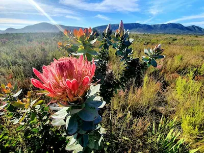

Country Data
- Area: 1,221,037 sq km
- Population: ~64 million
- Capital: Pretoria (Executive), Cape Town (Legislative), Bloemfontein (Judicial)
- Languages: Zulu, Xhosa, Afrikaans, English (11 Official Languages)
- Currency: South African Rand
- Time Zone: UTC+2
- Calling Code: +27
- Internet TLD: .za
Weather
- Temperature: 20℃
- Conditions: Partly Cloudy
- Wind: 5 km/h
- Wind Chill: